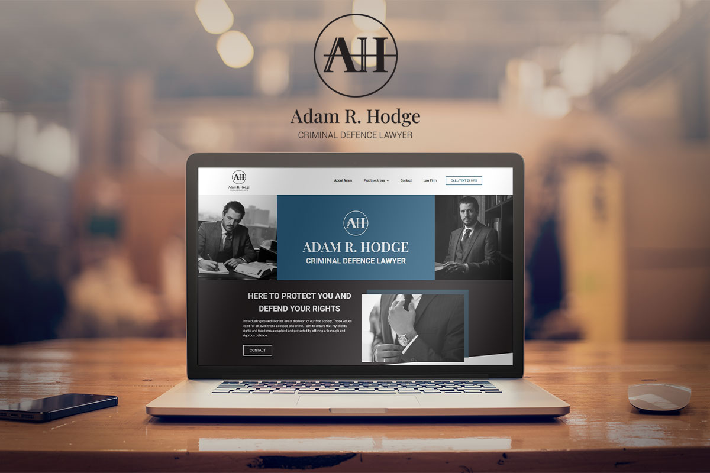

Adam R. Hodge
Logo, Website Design & Build

Logo, Website Design & Build
I started off with the logo design, brainstorming words that needed to be portrayed through this icon; masuline, sleek, modern.
The b&w photos feel so professional and authentic with the blue accents really making content pop off the site pages. He was very happy with both the logo and the site!